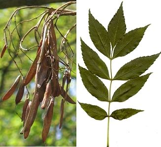

Woher kommt der Name Eschenahorn?
 Der Fruchtstand und das Blatt des Eschenahorns...
Der Fruchtstand und das Blatt des Eschenahorns...
...sehen dem Fruchtstand und dem Blatt der Esche ähnlich.
Auf Englisch heißt der Eschenahorn Boxelder.
Woher kommt der Name Eschenahorn? |  ...sehen dem Fruchtstand und dem Blatt der Esche ähnlich.
|